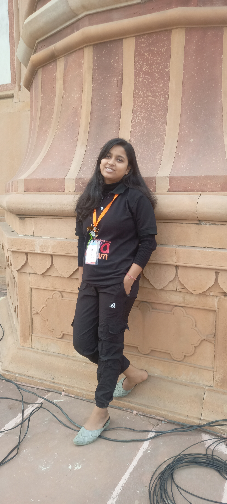

Adya Das
B.Tech - Computer Science & Engineering
Government Engineering College, Vaishali
About Me
I am a passionate web developer with a keen interest in creating user-friendly and efficient web applications. I love to explore new technologies and enhance my coding skills.
Internship
Web Development Intern - Lyss Technology
Education
- B.Tech (CSE) - Government Engineering College, Vaishali
- Class 12 - Gyan Bharti Public School, Darbhanga
- Class 10 - Gyan Bharti Public School, Darbhanga
Field of Interest
- Web Development
- Software Engineering
- UI/UX Design
- Artificial Intelligence
Hobbies
- Traveling
- Creating Madhubani Paintings
- Exploring New Technologies